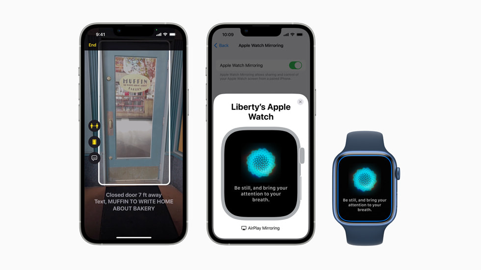

魔法のような連携
Macで書き始めたメールをiPhoneで仕上げる。iPadをMacのセカンドディスプレイにする。デバイスの境界線は、もう存在しません。

プライバシーという権利
あなたのデータは、あなただけのもの。Appleは設計の段階からプライバシーを組み込み、個人情報を守り抜きます。

細部への、執拗なまでのこだわり
アルミニウムの質感、Retinaディスプレイの輝き、そして滑らかなタイポグラフィ。指先に触れる感触から、目に映るピクセルまで、美しさは細部に宿ります。

誰にでも開かれた扉
最新のEye TrackingやMusic Hapticsなど、Appleはテクノロジーを通じてすべての人を力づけます。どんな個性も置き去りにしない、先進のアクセシビリティ。
地球への約束
2030年までに、すべての製品をカーボンニュートラルに。再生素材の使用を加速させ、未来のためのイノベーションを続けています。